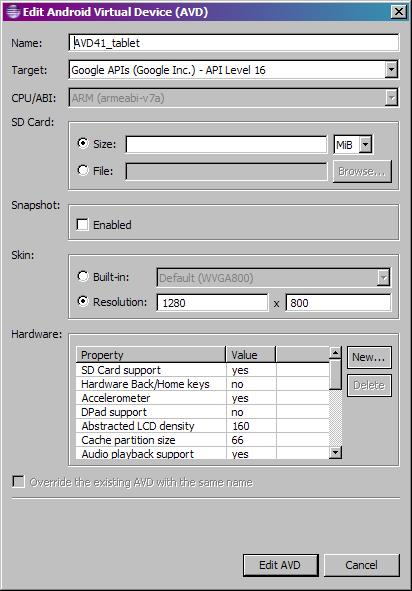
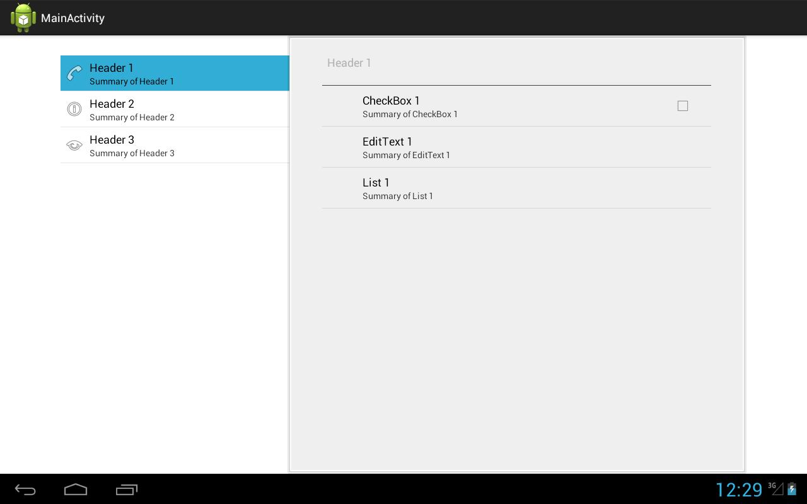
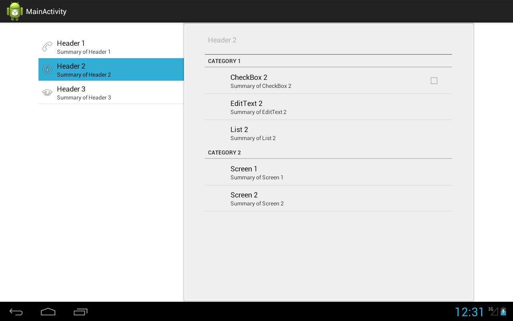
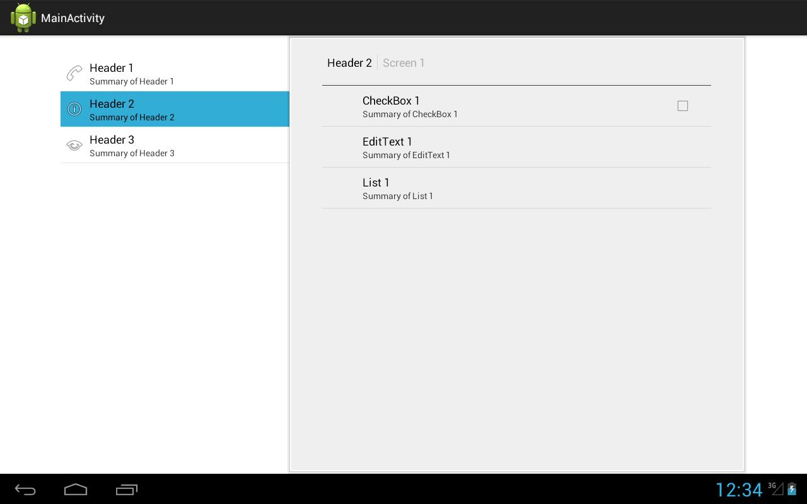
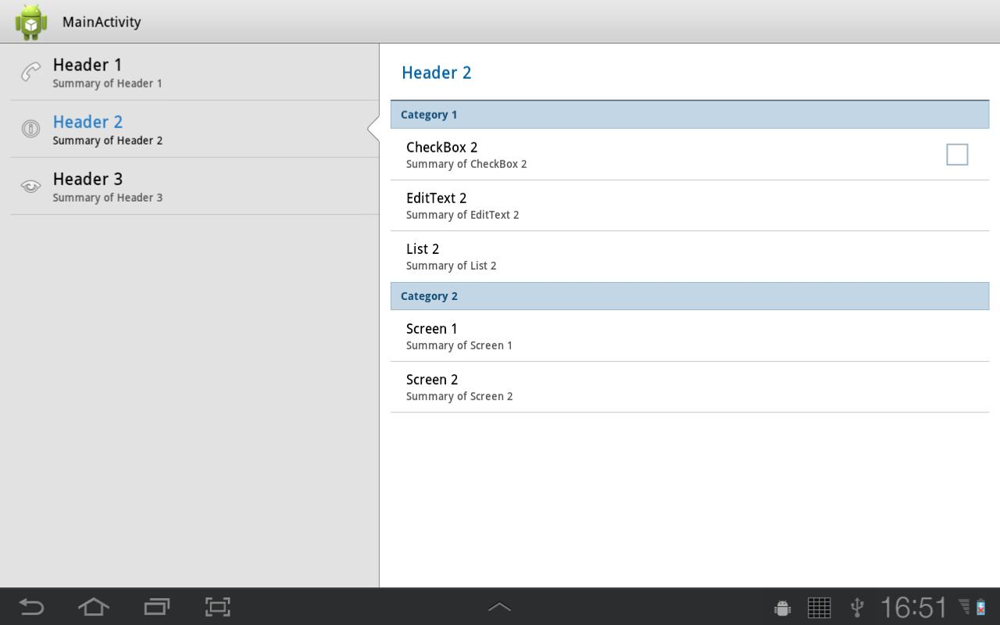
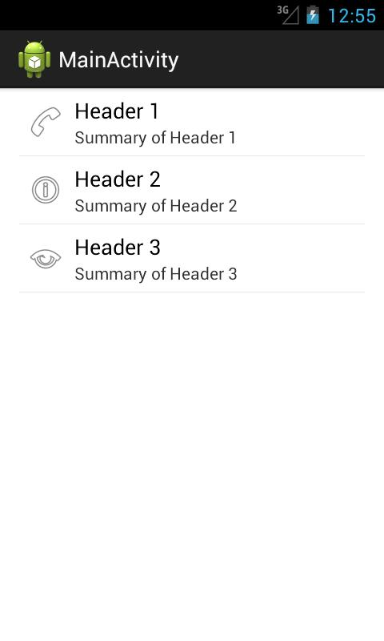
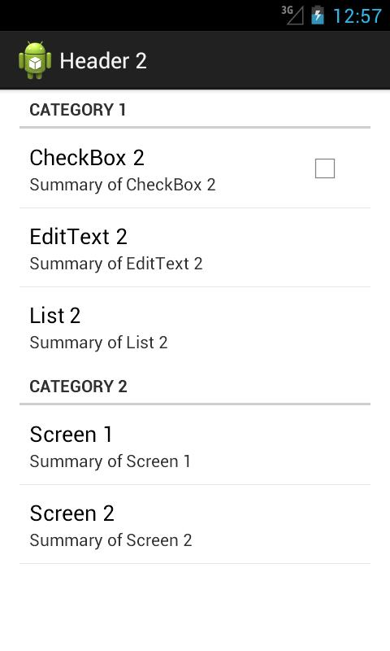

В этом уроке:
- работаем с PreferenceFragment
- используем Headers
В Уроках 71-75 мы рассматривали особый вид Activity – PreferenceActivity. Оно позволяет нам удобно работать с Preferences. Для фрагментов есть аналог – это PreferenceFragment, имеющий тот же функционал.
В Android 3 у PreferenceActivity появилась новая возможность – Headers (заголовки). Они позволяют на больших экранах без труда отображать настройки, разделенные на две панели по вертикали. Если же экран мал для такого разделения, то эти панели будут на разных экранах.
Создадим приложение, в котором используем PreferenceFragment с простыми настройками. А далее переделаем его под использование заголовков.
Создадим проект:
Project name: P1111_PreferenceFragment
Build Target: Android 4.1
Application name: PreferenceFragment
Package name: ru.startandroid.develop.p1111preferencefragment
Create Activity: MainActivity
Добавим строки в strings.xml:
<string name="checkbox1_title">CheckBox 1</string>
<string name="checkbox1_summary">Summary of CheckBox 1</string>
<string name="edittext1_title">EditText 1</string>
<string name="edittext1_summary">Summary of EditText 1</string>
<string name="list1_title">List 1</string>
<string name="list1_summary">Summary of List 1</string>
<string-array name="entries">
<item>one</item>
<item>two</item>
<item>three</item>
</string-array>
<string-array name="entry_values">
<item>1</item>
<item>2</item>
<item>3</item>
</string-array>Тексты будут использоваться для описания настроек, а массивы – для списка.
Cоздадим файл, описывающий настройки. Для этого в папке res создаем папку xml, если ее там нет. И создаем файл: res/xml/pref1.xml:
<?xml version="1.0" encoding="utf-8"?>
<PreferenceScreen
xmlns:android="http://schemas.android.com/apk/res/android">
<CheckBoxPreference
android:key="chb1"
android:summary="@string/checkbox1_summary"
android:title="@string/checkbox1_title">
</CheckBoxPreference>
<EditTextPreference
android:key="address1"
android:summary="@string/edittext1_summary"
android:title="@string/edittext1_title">
</EditTextPreference>
<ListPreference
android:entries="@array/entries"
android:entryValues="@array/entry_values"
android:key="list1"
android:summary="@string/list1_summary"
android:title="@string/list1_title">
</ListPreference>
</PreferenceScreen>Три простейших настройки. Я не буду повторяться, и описывать значения элементов и атрибутов. Все это уже описано в Уроке 71.
Итак, файл настроек создан. Нужен фрагмент, который эти настройки нам покажет. Создаем класс Fragment1, наследующий android.preference.PreferenceFragment.
Fragment1.java:
package ru.startandroid.develop.p1111preferencefragment;
import android.os.Bundle;
import android.preference.PreferenceFragment;
public class Fragment1 extends PreferenceFragment {
public void onCreate(Bundle savedInstanceState) {
super.onCreate(savedInstanceState);
addPreferencesFromResource(R.xml.pref1);
}
}Метод addPreferencesFromResource прочитает файл с описанием настроек и выведет их на экран.
Осталось немного подправить MainActivity.java:
package ru.startandroid.develop.p1111preferencefragment;
import android.app.Activity;
import android.os.Bundle;
public class MainActivity extends Activity {
public void onCreate(Bundle savedInstanceState) {
super.onCreate(savedInstanceState);
getFragmentManager().beginTransaction()
.replace(android.R.id.content, new Fragment1()).commit();
}
}Мы здесь не используем никакой layout, а сразу добавляем наш фрагмент в качестве контента, используя корневой контейнер с ID android.R.id.content.
Все сохраняем и запускаем приложение. Видим экран настроек

Можно поставить галку или нажать на два других пункта настроек и получить диалоговое окно для ввода значения. Все как обычно.
Заголовки
Теперь рассмотрим, что нам дают заголовки. Можно сказать, что заголовки - это корневые ветки дерева настроек. Мы сделаем три таких ветки: первые две будут открывать наши фрагменты с настройками, а третья откроет настройки звука.
Один фрагмент с настройками у нас уже есть, создадим второй.
Добавим строки в strings.xml:
<string name="checkbox2_title">CheckBox 2</string>
<string name="checkbox2_summary">Summary of CheckBox 2</string>
<string name="edittext2_title">EditText 2</string>
<string name="edittext2_summary">Summary of EditText 2</string>
<string name="list2_title">List 2</string>
<string name="list2_summary">Summary of List 2</string>
<string name="category1">Category 1</string>
<string name="category2">Category 2</string>
<string name="screen1_title">Screen 1</string>
<string name="screen1_summary">Summary of Screen 1</string>
<string name="screen2_title">Screen 2</string>
<string name="screen2_summary">Summary of Screen 2</string>
<string name="header1_title">Header 1</string>
<string name="header1_summary">Summary of Header 1</string>
<string name="header2_title">Header 2</string>
<string name="header2_summary">Summary of Header 2</string>
<string name="header3_title">Header 3</string>
<string name="header3_summary">Summary of Header 3</string>Создадим файл res/xml/pref2.xml:
<?xml version="1.0" encoding="utf-8"?>
<PreferenceScreen
xmlns:android="http://schemas.android.com/apk/res/android">
<PreferenceCategory
android:title="@string/category1">
<CheckBoxPreference
android:key="chb2"
android:summary="@string/checkbox2_summary"
android:title="@string/checkbox2_title">
</CheckBoxPreference>
<EditTextPreference
android:key="address2"
android:summary="@string/edittext2_summary"
android:title="@string/edittext2_title">
</EditTextPreference>
<ListPreference
android:entries="@array/entries"
android:entryValues="@array/entry_values"
android:key="list2"
android:summary="@string/list2_summary"
android:title="@string/list2_title">
</ListPreference>
</PreferenceCategory>
<PreferenceCategory
android:title="@string/category2">
<PreferenceScreen
android:fragment="ru.startandroid.develop.p1111preferencefragment.Fragment1"
android:summary="@string/screen1_summary"
android:title="@string/screen1_title">
</PreferenceScreen>
<PreferenceScreen
android:summary="@string/screen2_summary"
android:title="@string/screen2_title">
<intent
android:action="android.intent.action.VIEW"
android:data="http://www.developer.android.com">
</intent>
</PreferenceScreen>
</PreferenceCategory>
</PreferenceScreen>Здесь используем те же простые элементы, что и ранее, а также – категории и экраны (Урок 72). Только в экранах мы указываем не дочерние элементы, а перенаправления. В первом экране с помощью атрибута android:fragment мы указываем Fragment1, который мы создали в начале урока. А во втором экране указываем intent, который откроет в браузере страницу.
Создаем фрагмент, который нам эти настройки покажет.
Fragment2.java:
package ru.startandroid.develop.p1111preferencefragment;
import android.os.Bundle;
import android.preference.PreferenceFragment;
public class Fragment2 extends PreferenceFragment {
public void onCreate(Bundle savedInstanceState) {
super.onCreate(savedInstanceState);
addPreferencesFromResource(R.xml.pref2);
}
}Переходим к созданию заголовков
Создаем файл с описанием заголовков res/xml/pref_head.xml:
<?xml version="1.0" encoding="utf-8"?>
<preference-headers
xmlns:android="http://schemas.android.com/apk/res/android">
<header
android:fragment="ru.startandroid.develop.p1111preferencefragment.Fragment1"
android:icon="@android:drawable/ic_menu_call"
android:summary="@string/header1_summary"
android:title="@string/header1_title">
</header>
<header
android:fragment="ru.startandroid.develop.p1111preferencefragment.Fragment2"
android:icon="@android:drawable/ic_menu_info_details"
android:summary="@string/header2_summary"
android:title="@string/header2_title">
</header>
<header
android:icon="@android:drawable/ic_menu_view"
android:summary="@string/header3_summary"
android:title="@string/header3_title">
<intent
android:action="android.settings.DISPLAY_SETTINGS">
</intent>
</header>
</preference-headers>Три заголовка. Первый откроет Fragment1, второй – Fragment2, третий, используя intent, – настройки экрана. Иконки взяты случайные.
Ок. Заголовки есть, теперь надо их отобразить. Для этого используем MainActivity. Но, чтобы оно умело работать с заголовками, оно должно наследовать PreferenceActivity.
Перепишем MainActivity.java:
package ru.startandroid.develop.p1111preferencefragment;
import java.util.List;
import android.preference.PreferenceActivity;
public class MainActivity extends PreferenceActivity {
public void onBuildHeaders(List<Header> target) {
loadHeadersFromResource(R.xml.pref_head, target);
}
}Метод onBuildHeaders вызывается системой, когда надо строить заголовки. На вход он принимает список List<Header>, который нам надо наполнить. Для этого вызываем метод loadHeadersFromResource, и передаем ему наш файл с заголовками и наполняемый список.
Все сохраняем и запускаем. Я использую для запуска AVD, эмулирующий планшет на 4.1

Приложение выглядит так:

Мы видим три заголовка, которые мы прописывали в файле pref_head.xml. Открыт первый - Header 1, он отображает Fragment1. А Fragment1 отображает настройки из pref1.xml.
Нажмем на второй заголовок - Header 2.

Видим Fragment2 с настройками из pref2.xml. Видны категории и экраны, которые мы создавали. Напомню, что Screen 1 должен открыть Fragment1, а Screen 2 – сайт. Проверим.
Жмем Screen 1.

Открылся Fragment1 как вложенный экран. Сверху отображается полный путь вложенности. Вернуться можно кнопкой Назад. Таким образом, вы можете создавать вложенные экраны с настройками, не уходя от заголовков.
Нажатие на Screen 2 запустит браузер и откроет ссылку.
Нажатие на Header 3 откроет настройки экрана.
Если запустить это же приложение на планшете с Android 3.2, оно будет выглядеть так:

Если запустить, не на планшете, а на смартфоне с 4.1, то приложение само для себя каким-то образом решает, что разбить экран на две части здесь не получится и показывает заголовки на одном экране

а содержимое на другом

Чтобы программно определить, будет экран делиться на две части или нет, можно использовать метод isMultiPane.